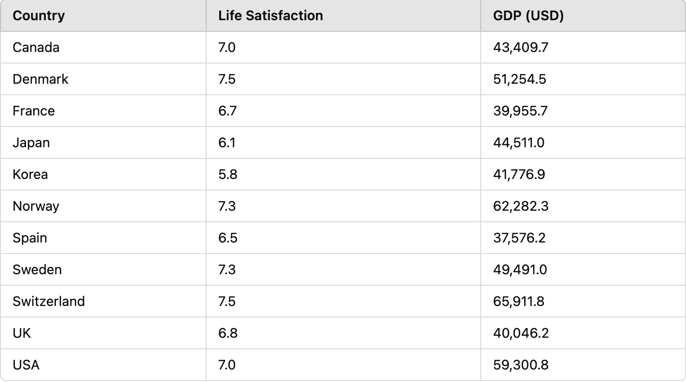

In this post, I explore the relationship between Gross Domestic Product (GDP) and life satisfaction across various countries, using data from the OECD.
The life satisfaction index is based on survey data, where respondents rate their satisfaction on a scale of 1 to 10, while GDP per capita is a measure of economic output per person.
Both values were standardized for comparison, which allows to visualize the relationship between these two key metrics on the same scale, ranging from 0 to 1. The goal was to identify if countries with higher GDP also experience higher life satisfaction.
Here are the actual values for GDP and Life Satisfaction: 
It’s clear that the relationship between GDP and life satisfaction is not linear. You can see that for countries like Norway and Switzerland, GDP coincides with high life satisfaction. However, countries like Spain and France have the lowest GDP per capita of the countries studied, but their life satisfaction scores are still fairly strong.
Canada, Sweden, and the UK have moderate GDP levels but relatively high life satisfaction scores (between 6.8 and 7.3), indicating that a balance of economic growth and quality of life might contribute to their well-being.
Denmark, despite having a GDP lower than Norway and Switzerland, has a life satisfaction score of 7.5, the highest among the countries studied.
And finally, Japan and Korea are outliers, with lower life satisfaction (6.1 and 5.8), despite having moderate GDP levels.
In conclusion, GDP is a critical measure of a country’s economic health but it isn’t the only determinant of its citizens’ happiness. This analysis shows that economic activity and happiness do not always go hand in hand.